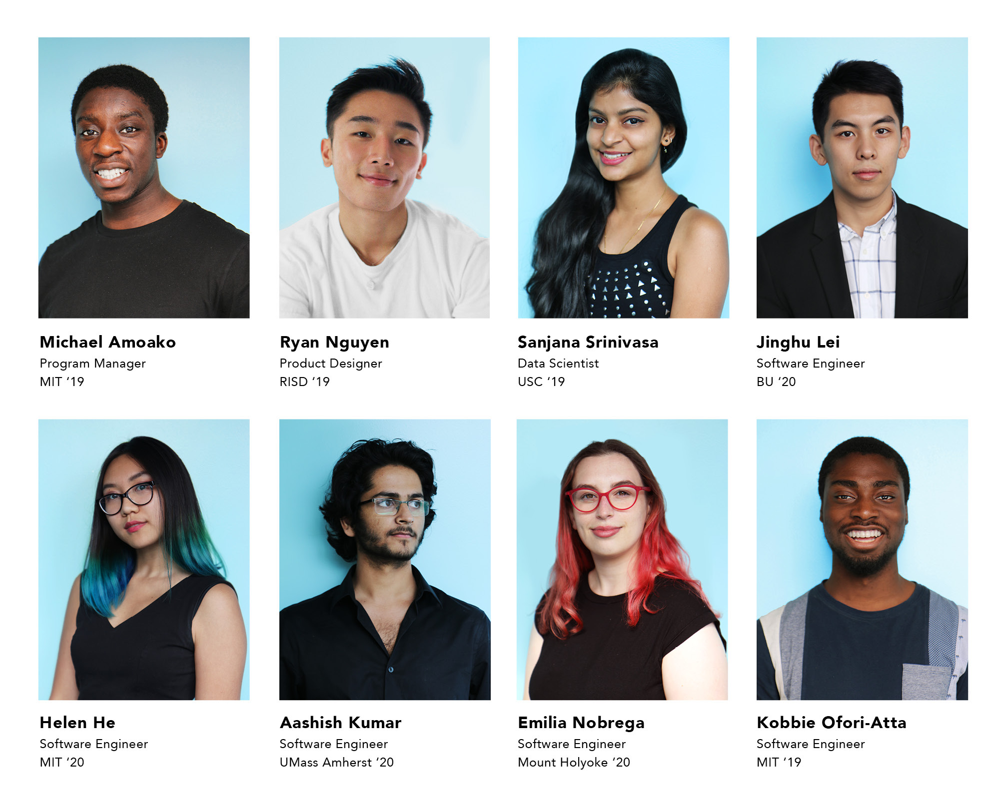
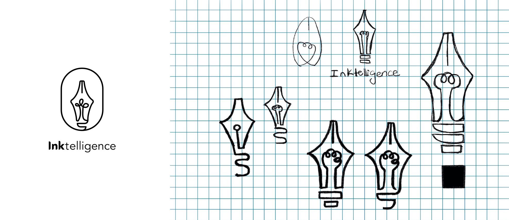
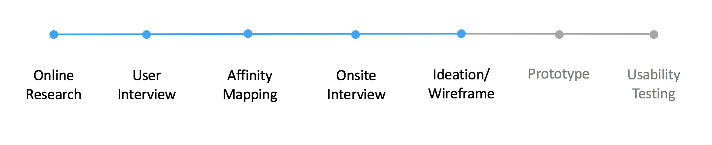
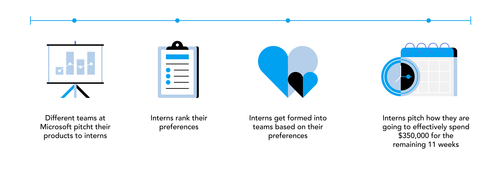
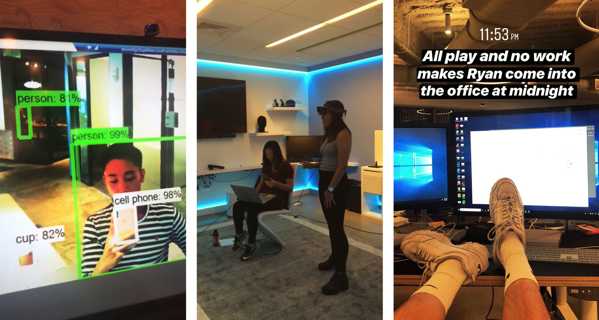
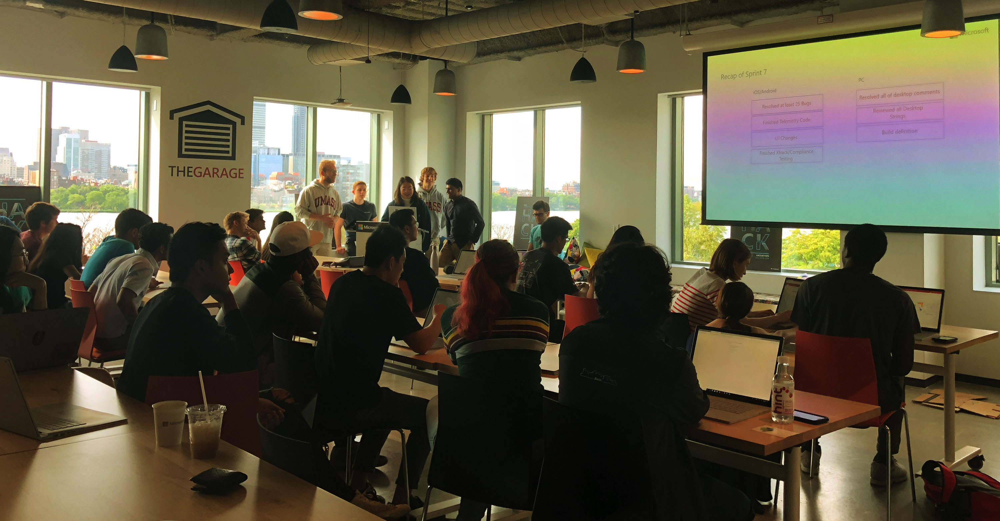
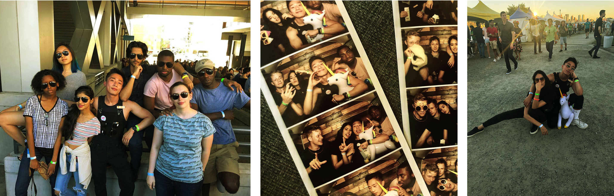
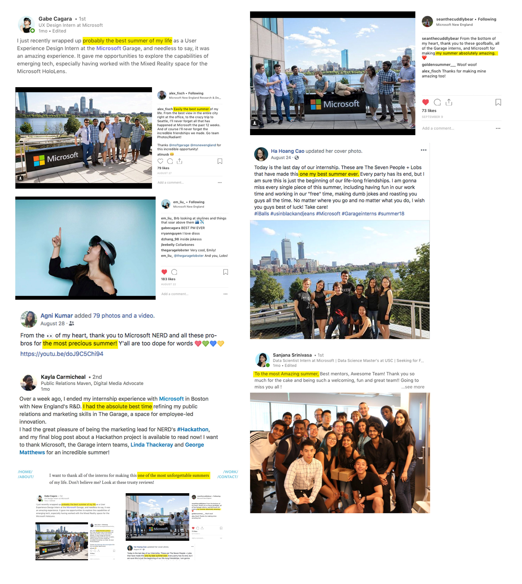

MICROSOFT
In the summer of 2018, I had the pleasure to work as a Product Design intern for Microsoft at the New England Research and Development Center (NERD) in Cambridge, MA. I was part of the Microsoft Garage, an intensive program that pushes interns to complete a product from start to finish in the span of twelve weeks. During my time at the Garage, I teamed up with seven other interns to collaborate on two different products.
MEET THE TEAM
Working alongside with the Microsoft’s Ink team from Redmond, our team, Inktelligence, has a total of eight members. Inktelligence consists of one program manager, one data scientist, one product designer, and five software engineers. The best part is that we are all current students from different schools across the country. Meet my team!
FONTMAKER
Due to the Non-Disclosure Agreement, I cannot release any information until the product is officially shipped on the store. Come back later this year!
INKSTRUCTOR
Due to the Non-Disclosure Agreement, I cannot release any information regarding the project. Come back later!
REFLECTION
“I can’t believe I lost my voice at a Pitbull’s concert!”
Our first day of work was on June 4th, the day after Microsoft announced the its acquisition of Github. The amount of Github jokes I heard on the first day almost made me quit, but I’m glad I pulled through. Here’s how I spent the most amazing 12 weeks during the summer of 2018 at Microsoft!
Shark Week
In the summer of 2018, I had the opportunity to intern as a Product Designer at Microsoft Garage in Cambridge, MA. The Garage is Microsoft’s official outlet for experimental projects, a creative hub that encourages people to challenge convention through cutting edge technology. Undoubtedly, the internship program at the Garage is much different from the conventional internship. This internship program splits 45 interns into six different teams, each working on a particular product. Every team is then responsible for ideating, building the product from scratch, and getting that product to ship at the of the summer. Here's the break down of our first week:
The first week of work is called “Shark Week”, where interns got to hear different teams at Microsoft pitch to us about their products. The interns then got to rank which team we want to be on and what technology we want to work with. When the team is formed, each team ideally had one program manager, one designer, and five software engineer interns. For example, since I wanted to work with ink technology, I was placed on team Inktelligence. My team worked directly with the Ink sponsor team from Microsoft's headquarters to develop an application for ink-enabled devices.
Following the next couple of days, all of the teams had to come up with a game plan on how we were going to effectively spend $350,000 worth of time and resources in the next 11 weeks. During these few days, we had to come up with a product that meets our sponsor team’s challenge, define the scope of our product, and identify target users and competition.
All Play and No Work
Within the next couple of weeks, my team worked really hard to develope our product so we can pitch it to our sponsor team during Signature Week (five weeks into the internship, interns have the opportunity to fly to Microsoft's headquarters to update our sponsor team on our progress in person). As the only designer on the team, I was responsible for delivering all of the design related assets, anything from user research, usability testing, prototypes to marketing deliverables.
One of the best things about being at the Garage was getting to see how cutting edge technologies developed. Because the Garage is Microsoft’s experimental outlet, a lot of the products were created using new technologies like artificial intelligence or augmented reality. There was a few times where I caught myself asking: “We can actually do that?!”
 While working with my team, I also got to see what other teams were doing. It was always very fascinating to see how other design interns approach their challenges. Since we got to work with new experimental technology, there was very little precedent on how to approach the design problems for these new platforms. For example, one team was designing an utility application for the HoloLens. The challenge for that particular designer was how to prototype as well as usability test for an augmented reality application.
Since there was only one full time designer working in the Cambridge office, there was not a lot of design mentorship through out the program. That said, the five design interns working alongside with me this summer had been my go-to for any design problems I had! Additionally, we got to learn how to design through the lens of software engineers, designing with constraints.
Signature Week
The first week of July is also called the “Signature Week” at Microsoft, where interns across the country fly to its headquarters in Redmond, Washington to pitch their projects to the sponsor teams. It is also a great opportunity for interns to meet other interns, full-time employees, and see what the culture is like at Microsoft’s headquarters. Signature Week can be quite stressful because your schedule will be packed with back to back meetings, on top of coffee chats with full-time employees from different teams. That said, there is a reason why all of the interns look forward to Signature Week!
Every year, Microsoft hosts a big concert for interns called “Signature Event". Microsoft rents out a secret location and invites famous artists to come play at the event. No one knows who’s performing until the day of the event, and the details of the event are only known by a few people within the company. For example, in the previous years, Microsoft had invited Ellie Goulding, Maroon 5, Macklemore, and the Chainsmokers to come perform.
This year, thanks to our lucky stars, we were surprised with Pitbull as the headliner! I never would have thought that one day I'd lose my voice at a Pitbull’s concert. This year concert was held at Gasworks, a big industrial lot with the Seattle skyline as the background. Additionally, at the end of the concert, all of the interns who attended got to walk home with a brand new Xbox.
The Sun’s Setting
For the remaining weeks of the internship, we worked on polishing and getting our product ready for shipping. Going beyond the requirement from our sponsor team, my team identified a big opportunity in how Microsoft’s ink technology could make an impact in the educational and occupational therapy space. Our team’s program manager (Michael) and I conducted user research and interviews in order to dig deeper into this potential area. Towards the last half of our internship, we finalized the end-to-end version of our initial product, as well as documented our findings for the second product.
Without a doubt, Microsoft sure knows how to treat their interns. Throughout the summer, we got paid to:
- Flew to Seattle and went to fancy restaurants
- Ate lobsters at sunset on an island
- Spent an entire day at Dave and Busters
- Spent another whole day at Six Flags
- Went to different events/shows in Boston
- (Secretly) tanning on the balcony during work hours
While I really enjoyed all of these perks, the best part of the summer is definitely the people. Because I got to work closely with other students/interns, the whole internship feels like a long, all expenses paid camp, rather than work! We all became friends in and outside of work: going out to picnics, playing chess until 2AM, celebrating multiple 21st birthdays.
I want to thank all of the interns for making this one of the most unforgettable summers of my life. Don't believe me? Look at these trustworthy reviews!
If you’re interested to learn more about my experience at the Garage, or thinking about applying to be a part of the Garage yourself, feel free to reach out to me!
Links
Microsoft Garage
Garage Intenrship Program
Garage Intenrship Blog
Microsoft Career Page
Thank you George Matthews and Maria Guirguis for putting up with us during these sunny twelve weeks! 🌞